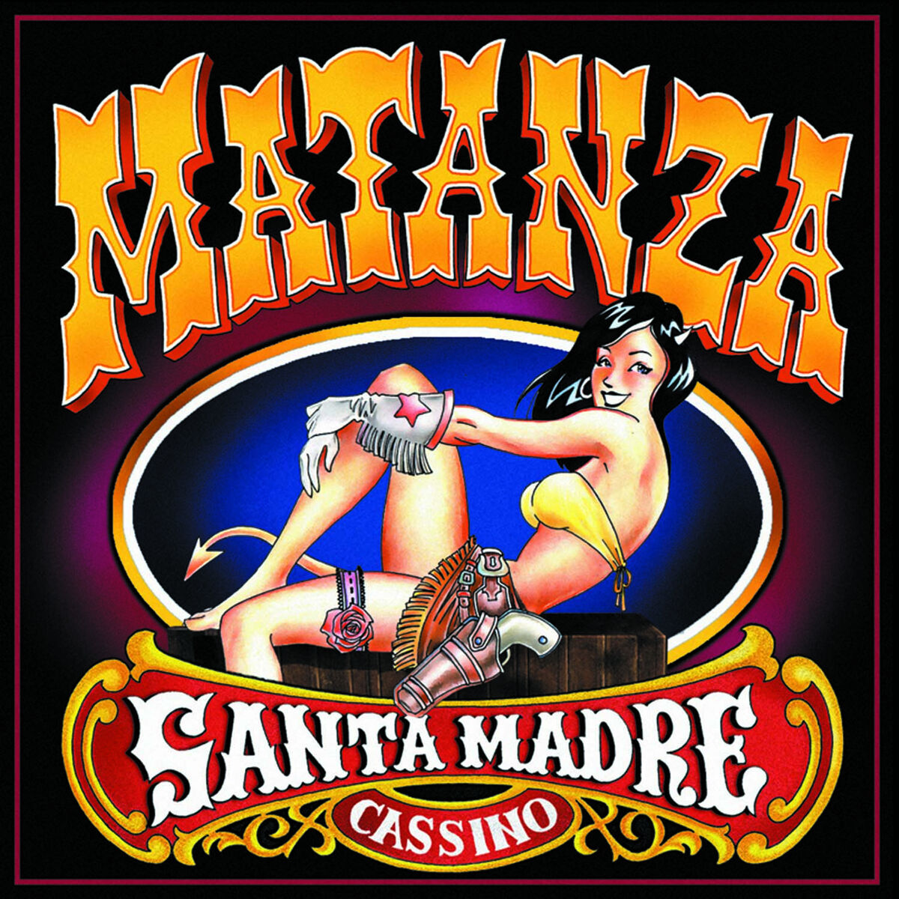

Discografia

Santa Madre Cassino
Lançamento: 2001
Santa Madre Cassino
é o primeiro álbum
da banda matanza
A Arte Do Insulto
Lançamento: 2006
A Arte do Insulto
é o quarto álbum
da banda Matanza
Odiosa Natureza Humana
Lançamento: 2011
Odiosa Natureza Humana
é o quinto álbum
da banda Matanza

Pior Cenário Possível
Lançamento: 2015
Pior Cenário Possível
é o sétimo e último álbum
da banda Matanza.